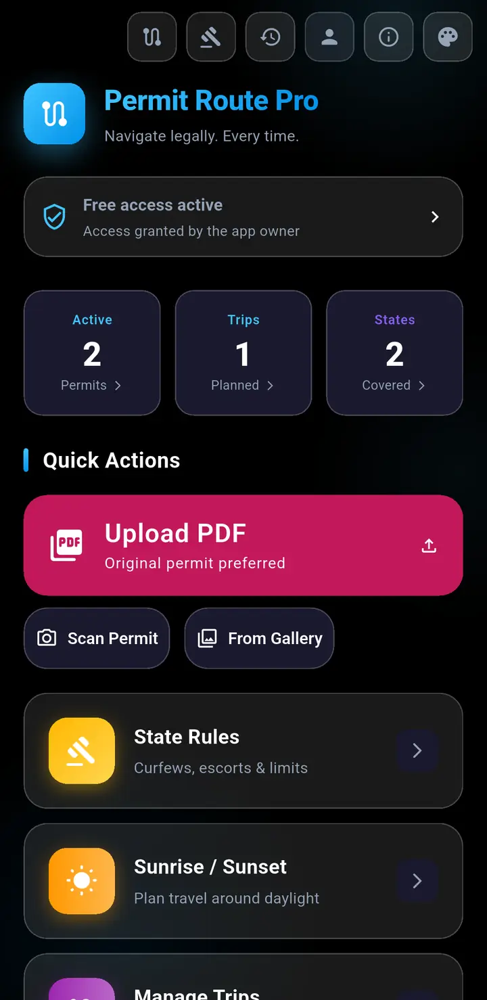
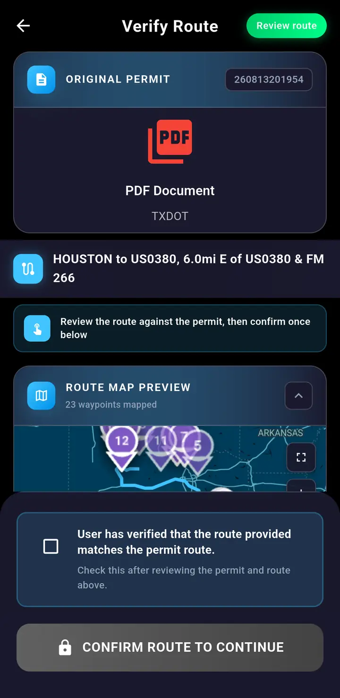
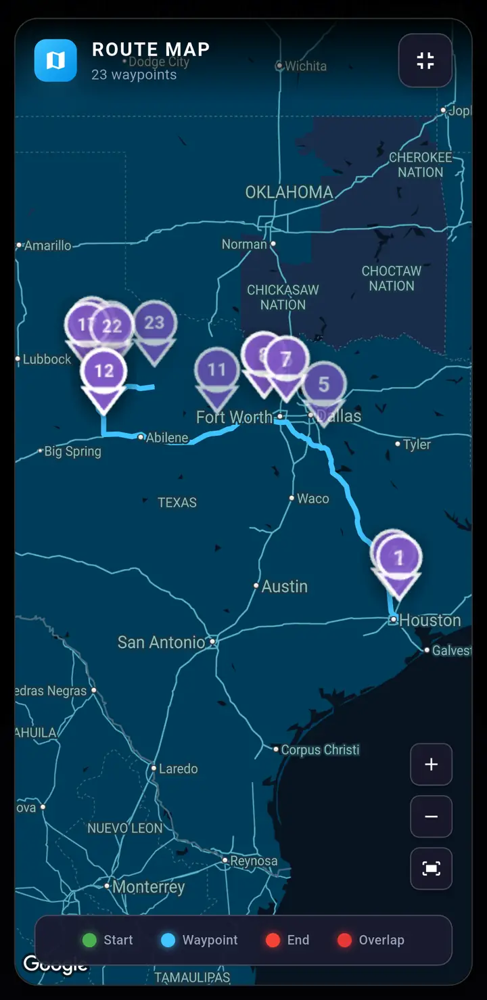
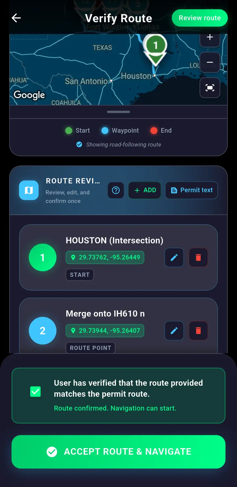
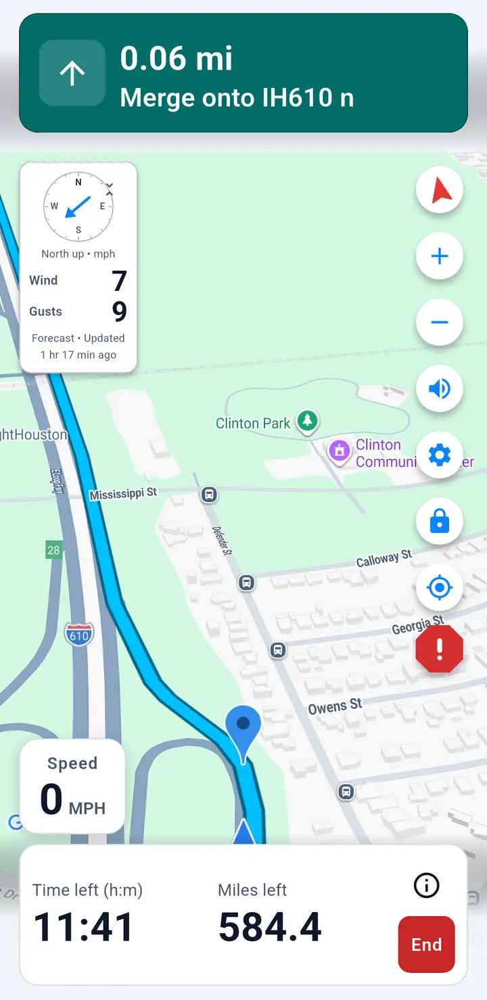
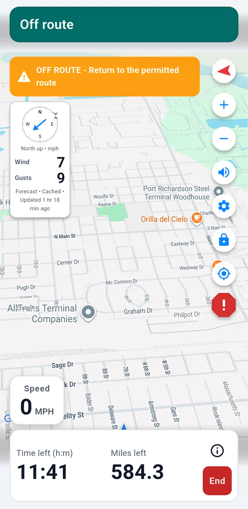

App field views
The complete route-review flow.
Six current views cover adding a permit, route verification, accepting the route, and navigation with the off-route warning. The app tutorial explains each screen step by step.





